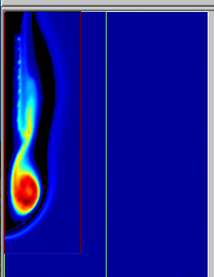

Entry 4¶
Smile, you’re on camera!!¶
Valentina Ricchiuti (LBNL)
This curious plot was generated during a simulation which investigated a “burn-wet” type reactor for the purpose of CF4 abatement via high-temperature combustion. CF4 is a dangerous greenhouse gas, with very high Global Warming Potential; it is quite difficult to destroy it since it is chemically very stable, and as a result it can last for thousands of years in the atmosphere. The purpose of the project was to develop a more energy efficient method to destroy CF4.
The chemical mechanism used for the simulation involved 72 species and 518 reactions; this mechanism was assembled from two different sources:
- GRI-Mech 3.0, which describes the combustion of CH4 and subsequent formation of nitrogen-based emissions
- 0-carbon and 1-carbon reactions subset from NIST, which describes fluorine combustion.
The domain represents a (8x32)cm, 2D axial-symmetric reactor in which a mixture of CH4, CF4 and air was injected from the top; the rest of the domain was filled with combustion products generated by a 1D premixed flame whose initial conditions are given in terms of mole fractions of CH4 and equivalence ratio.
Simulation was performed using adaptive mesh refinement; in particular, mesh was refined near the flame zone. We used three AMR levels here: simulation started at coarser level (or level 0, which covers the entire domain), then two refinement levels (level 1 and level 2, represented by the green and red boxes respectively) were added in in the flame zone.
This plot was obtained using Amrvis, a visualization package developed at CCSE at the Lawrence Berkeley National Lab.
The smiling species is the H2O2 molecule; it was captured at about 20 milliseconds, and lasted for almost 10 timesteps (~ 5 milliseconds), then disappeared. There were other smiling molecules in the simulation (like CH3OH), but this one seemed to be the happiest.
Code and data: